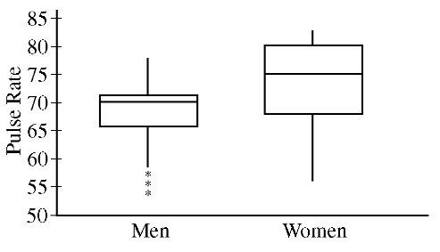

The pulse rate for each person in a sample of 20 men and 20 women was recorded. The boxplots below summarize the pulse rates for the men and the women in the sample.

Which of the following statements about the people in the sample must be true?